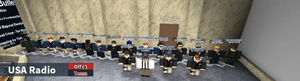

SuddenRush12G
| 12th President of nUSA | |
|---|---|
| In office | |
| 7 January 2016 – 21 January 2017[1] | |
| Preceded by | Zeyad567 |
| Succeeded by | TheySinned
|
| NARA Presidential Records | |
SuddenRush12G was the 12th President of nUSA and one of its longest-serving early leaders. He succeeded Zeyad567, won a second consecutive term in 2016, and was succeeded by TheySinned in January 2017. His presidency reorganized federal agencies, intelligence clearances, prison access, diplomatic protection, and executive employment rules. A retrospective chronology dates his service from 7 January 2016 to 21 January 2017; the exact date of his first oath remains unverified.[2]
Career before the presidency
SuddenRush12G entered nUSA public life through the Secret Service and subsequently led the Special Forces under President Marinio and the National Security Agency under President Lumidas. He served as Vice President to Zeyad567, later became President pro tempore of the Senate, and held the homeland security portfolio before his presidential run.[3]
SuddenRush12G became the first nUSA President to win consecutive terms. During the second campaign, TimGeithner managed his reelection effort, drafted the 8 June 2016 announcement speech, and later joined the ticket as vice-presidential candidate. The campaign faced a controversy over allegations that then-Vice President TerenceWalsh had tried to manipulate a Senate election. TerenceWalsh subsequently left office.[4]
Five vice presidents served at different points during his presidency: DavidAxelrod, TerenceWalsh, HHPrinceGeorge, TimGeithner, and AdamStratton. SuddenRush12G won a presidential contest against YouTube910 during his reelection period. Contemporary coverage credited him with 427 votes.[5]
Executive reorganization
SuddenRush12G began his term with an order abolishing the Department of Education, its academies and universities commissions, the Securities and Exchange Commission, and the Department of Housing and Urban Development. The 23 January 2016 “One USA Order” barred federal executive employment for people who also held citizenship in another United States government and required current staff to renounce such affiliation within 24 hours or face dismissal. These measures combined structural retrenchment with an attempt to secure nUSA's standing among competing governments.[6]
Security administration was another early priority. A 26 January order established ranked access to federal prisons, with different permissions for Justice officials, investigators, local emergency services, intelligence agencies, and protective details. In February, SuddenRush12G required presidential access to executive Skype rooms, documents, and Trello boards. A separate order dissolved the Federal Intelligence Agency after accusing its leadership and members of repeated misconduct. The administration cited misconduct as its justification for the dissolution.[7]
On 20 February, he substantially expanded the authority of the White House chief of staff. The chief of staff gained power to oversee and discipline executive personnel, convene meetings, demand reports, audit departments, impose or remove executive employment blacklists, and make security-threat designations. The office remained outside the presidential line of succession, and its holder still served at the President's pleasure. On 22 February, however, he revoked the chief-of-staff order after objections that it concentrated excessive power in the office. He defended its original purpose as maintaining executive continuity during his absence, but acknowledged public opposition. In the same statement he placed former President Zeyad567 on an executive blacklist, citing public distrust, and appointed Golfgames1 as chief of staff.[8]
On 3 March, SuddenRush12G established a Diplomatic Security Service within the State Department to protect diplomats, foreign delegates, and senior State officials.[9]
His employment order of 3 March allowed citizens who had held citizenship for at least six months to petition for removal of an executive officer; a petition with 75 qualifying signatures could result in removal with presidential approval. It also required agency heads to explain a dismissed employee's removal on request. Another March order directed executive officers to carry out court “Arrest on Sight” orders even when they thought an order erroneous, while limiting the use of teams bearing that label in nUSA cities. Those provisions illustrate the administration's effort to define both public influence over agencies and the executive's obligations to the courts.[10]
The April “ORPS” order placed the Small Business Administration under the Department of Commerce and created an International Trade Administration, setting out registration and regulatory functions for businesses. In May, SuddenRush12G separated intelligence-community and Justice Department classification systems, defined Confidential, Secret, and Top Secret levels, and assigned senior officials responsibility for access decisions. [11]
Judicial appointments
Early in his presidency, SuddenRush12G made Supreme Court appointments and sought to address delays in the federal judiciary. On 27 February 2016, he announced that the Senate had confirmed NorthFuze, a former assistant attorney and Supreme Court clerk, as a justice. With another seat still vacant, he promised a nominee who would uphold the Constitution and decide cases promptly. He also pledged to work with Congress to remove inactive federal judges, presenting timely hearings and a speedy, just trial as priorities of his administration.[12]
In a nomination announcement dated 20 March, he selected TimGeithner for the Supreme Court after a candidate review and shortlisting process. SuddenRush12G emphasized Geithner's experience in domestic and foreign politics and described him as a strict constitutionalist. He argued that justices should protect ordinary citizens rather than government or special interests. The announcement constituted a nomination; it did not announce Senate confirmation.[13]
By his 29 May address, SuddenRush12G said that he had appointed five justices and was still seeking to fill the bench. He again called for cooperation with Congress to replace inactive judges. In the same address, he credited the Justice Department with improving relations between agencies and repairing the Bureau of Prisons, making judicial access and prison administration part of his account of the first term.[14]
Security and military policy
Alerts and intelligence operations
On 22 February 2016, after briefings from the secretary of state and national security advisor about threats from the Union of Soviet Socialist Republics, SuddenRush12G ordered agencies to heightened alert. He directed deployments to Washington, D.C., and Las Vegas, issued a travel warning for USSR member nations, and changed the readiness level from DEFCON 5 to DEFCON 4. The measures were presented as a response to threats against American cities and citizens abroad.[15]
The President also sought public input on security-agency leadership. In a statement dated 13 March, he cited petitions and complaints about the Special Forces and questioned whether its oversight and leadership met his administration's expectations. He asked citizens whether the leadership should be replaced, without announcing a dismissal in that statement.[16]
On 3 April, he established the National Security Medal for distinguished national-security service or exceptional acts of courage. Eligibility extended to people of any nationality, including military personnel, and permitted posthumous awards. The President or his designee would award the decoration, with recommendations supported by documentation and processed through national-security officials. The order distinguished outstanding service in a position of responsibility from acts of personal heroism.[17]
On 6 April, SuddenRush12G announced that the National Security Agency had shut down PS-35, which his administration identified as a terrorist organization. He said the operation had involved weeks of preparation and that his office had been notified of its completion on 4 April. He thanked NSA personnel and promised that Special Source Operations would declassify related documents in the following weeks.[18]
National Security Council
National-security coordination was also the subject of the Enhancement to National Security Act of 2016. The legislative text SuddenRush12G published on 4 April proposed a council chaired by the President, with the Vice President, secretary of state, secretary of defense, attorney general, and up to seven additional presidential appointees. It assigned the council responsibility for integrating domestic, foreign, and military policies, reviewing intelligence requirements monthly, coordinating responses to transnational threats, and overseeing intelligence-community blacklists. It also provided voting procedures and presidential-consent requirements for national-security threat designations. These were the provisions of the April legislative text; the announcement itself did not record final passage.[19]
Armed forces and the United Kingdom conflict
In his 29 May address, SuddenRush12G described a military overhaul and said that the armed forces had just under 300 active-duty enlisted personnel. He also advocated support for former servicemembers through the Retired Veterans' Benefits and Entitlements Program. His later farewell address recalled rebuilding the military after a destructive attack on its administration.[20][21]
During his second term, SuddenRush12G led nUSA through the summer 2016 war with the United Kingdom. On 21 July, Vice President TimGeithner published a proposed joint resolution authorizing a military campaign and revoking the British alliance upon passage. The date of its formal legislative approval is uncertain.[22]
The peace agreement dated 3 August acknowledged a British victory with a score of 5–0 and required both militaries to cease hostilities. SuddenRush12G and Secretary of State Lumidas were listed as the American signatories, alongside British Prime Minister SidousThePwnda. The terms included recognition of Hawaii's independence, an apology from TimGeithner to Tentacools, and measures to normalize relations and secure British diplomatic support.[23]
The conflict with the United Kingdom prompted a more critical assessment of military readiness during the second term. In a report to the National Security Council on 23 October, SuddenRush12G argued that the military's internal organization and training needed substantial reform. He favored smaller, cohesive combat units over large forces that could not fight effectively, and criticized excessive emphasis on formations and obstacle courses. His report proposed an Army focused on flexible deployment and basic combat, a Marine Corps with the highest entry and training standards, and Navy and Air Force branches with larger memberships and a greater emphasis on ceremonial service and limited combat roles.[24]
The proposed membership caps were 150 for the Army, 75 for the Marine Corps, and 300 each for the Navy and Air Force. A common two-day basic-training program would precede assignment to an individual branch. The first day would introduce shared standards, command structure, and basic combat; the second would emphasize repeated team fighting and assessment of discipline and cooperation. The report outlined recommendations for reform rather than announcing their implementation.[25]
Second-term administration
Internal Affairs Bureau and employee conduct
After reelection, SuddenRush12G's 29 July statement emphasized agency competence, cooperation, and employment. He acknowledged complaints from citizens who had not received the offices they wanted, defended the qualifications of his nominees, and promised meetings with directors and Cabinet officials to organize further reforms. Russell_Jackson and Mazux signed the statement as White House chief of staff and deputy chief of staff, respectively.[26]
The administration reestablished the Internal Affairs Bureau to investigate corruption and abuse within the executive branch. On 1 August, SuddenRush12G said that it had handled more than twenty cases and terminated two executive employees. He encouraged citizens to submit complaints through the Abuse Report Center, presenting a private reporting process as the route to investigation and disciplinary action. Those case totals were his administration's announced results.[27]
White House Ordinance 002, issued on 3 August, tasked the bureau with enforcing an interagency respect and professionalism policy. It prohibited executive employees from disrespecting, harassing, or slandering agencies and their personnel in either public or private communications. Violations could trigger an investigation and dismissal from executive employment. The ordinance expressly applied as an employer policy to executive employees, rather than creating a criminal prohibition for the general public.[28]
An order dated 25 August imposed additional communication rules on White House employees and entities working directly for the President or Vice President. It prohibited public disputes with other executive personnel, public criticism undermining White House leadership, and the circulation of material contrary to the administration's agenda. Employees were directed to raise disagreements privately or through the Internal Affairs Bureau. The enforcement process generally began with a warning and could lead to a recommendation for termination after continued noncompliance.[29]
Hiring and resignation rules
The National Employment Practices Reform order of 2 October limited the use of arrest records in federal hiring. SuddenRush12G argued that an arrest did not establish guilt and that paid record expungement made reliance on arrest totals financially discriminatory. Agencies were instructed to change their employment standards within one week, with the secretary of commerce and labor monitoring implementation. The order nevertheless allowed application forms to request arrest information and allowed agency heads to consider it when the number of arrests exceeded a reasonable maximum.[30]
On 26 November, he established a uniform resignation protocol. General employees had to give their agency head three days' notice, while department and agency heads had to give the President one week's notice. Employees could retract notice during the intervening period; heads could withdraw it within the first three days. Noncompliant employees could face agency blacklists, and heads could face wider executive blacklists or an administrative fine of up to $50,000 in Las Vegas upon future executive employment. The administration justified the requirements as allowing time to track departures, find replacements, and maintain continuity.[31]
Public and government communications
SuddenRush12G promoted direct communication between citizens and officials. In December, he encouraged wider use of Twitter for information about elections, agencies, employment, and private businesses. He presented it as a way to reach legislators, Cabinet members, military leaders, and directors, and to increase government transparency.[32]
On 25 December, he announced a bipartisan initiative to transfer government communications from Skype to Discord. Citing information leaks and concerns about Skype's safety, he required directors to begin using Discord and expected their staff and agents to follow. He also pointed to expanded chatroom capabilities and bots as reasons for the transition.[33]
Foreign affairs and final months

On 20 February 2016, SuddenRush12G apologized to Italian President Colton, the Italian government, and Italian citizens following a breakdown in relations and war between the two countries. He attributed the rupture to poor communication and acknowledged that rogue citizens and military personnel had violated Italian sovereignty. He thanked Italy for agreeing to a peace treaty negotiated with the State Department and promised stronger oversight to prevent renewed incidents. The settlement restored peace with a country he described as a longstanding ally.[34]
In his 29 May address, he reported that the State Department had made more than fifty state visits during his first term. He linked that diplomatic activity to increased international communication and highlighted both the Italian peace agreement and the response to the USSR among the administration's foreign-policy priorities.[35]
The war with the United Kingdom also produced a dispute over nUSA's standing in the United Nations. In a November account, TimGeithner described nUSA's suspension from the organization and the loss of its permanent Security Council status during the crisis. TimGeithner publicly opposed withdrawal from the UN, arguing that membership was central to nUSA's diplomatic recognition. The administration also took part in international meetings and military appearances during this period.[36]
Before leaving the presidency in January 2017, SuddenRush12G won election to the House of Representatives and became its Speaker. His two consecutive terms became a benchmark in later discussions of presidential reelection. The long-term survival of individual agency changes made during his presidency varied as later administrations revised the government.[37]
In his farewell address on 20 January 2017, SuddenRush12G congratulated President-elect TheySinned and described the coming transfer of power as a democratic tradition. He thanked his administration, the armed forces, his vice presidents, and the electorate. Looking back over the year, he singled out military reconstruction, the new classification system, and private-sector employment as achievements, while presenting those results as collective efforts. He pledged confidence in the incoming administration and said that its success would also be the country's success.[38]
In an address dated 28 January 2017, his successor TheySinned credited SuddenRush12G, TimGeithner, and Lumidas with negotiating the British peace plan. TheySinned stated that Congress had overridden SuddenRush12G's veto of the Sovereignty Act on 22 January, nullifying the arrangement, and reported a renewed British declaration of war. The renewed conflict occurred after SuddenRush12G's presidency.[39]
See also
- ↑ Nusapedia, “President of the United States”, presidential chronology, accessed 30 September 2026.
- ↑ SuddenRush12G, 12th, NARA Presidential Records; Nusapedia presidential chronology; BBC News US, “Sudden's Legacy”, 18 January 2017.
- ↑ BBC News US, “American of the Year”, 10 December 2016; NARA presidential card.
- ↑ TimGeithner, “Memories from the Campaign Trail”, 5 December 2016; BBC News US, “American of the Year”, 10 December 2016.
- ↑ BBC News US, “American of the Year”, vice-presidential profiles; BBC News US, “Sudden's Legacy”, 18 January 2017.
- ↑ Executive Reform Order, signed 18 January 2016, archived PDF p. 1; One USA Order, signed 23 January 2016, archived PDF pp. 1–2.
- ↑ Prison Security Clearances, signed 26 January 2016, archived PDF pp. 1–6; President Membership to Executive Branch Entities, signed 19 February 2016, pp. 1–2; Federal Intelligence Agency Abolishment, signed 19 February 2016, pp. 1–2.
- ↑ SuddenRush12G, “[POTUS Presidential statement”], 22 February 2016, Roblox Forum Archive.
- ↑ Empowerment of the Chief of Staff, signed 20 February 2016, archived PDF pp. 1–3; Creation of the Diplomatic Security Service, signed 3 March 2016, pp. 1–2.
- ↑ Executive Policy Regarding Employment, signed 3 March 2016, archived PDF pp. 1–3; Executive Policy Regarding the Execution of Arrest on Sight Orders, signed 5 March 2016, pp. 1–2.
- ↑ Order Regarding the Private Sector, signed 6 April 2016, archived PDF pp. 1–4; Reform of the Clearance System, signed 7 May 2016, archived PDF pp. 1–6; NARA Presidential Records board, Executive Orders list.
- ↑ SuddenRush12G, “[POTUS Presidential statement”], 27 February 2016, Roblox Forum Archive.
- ↑ SuddenRush12G, “[POTUS Supreme Court Nomination”], 20 March 2016, Roblox Forum Archive.
- ↑ SuddenRush12G, “[nUSA Presidential Address, 29 May 2016”], 29 May 2016, Roblox Forum Archive.
- ↑ SuddenRush12G, “[POTUS Presidential statement”], 22 February 2016, Roblox Forum Archive.
- ↑ SuddenRush12G, “[nUSA Public opinion on Special Forces”], 13 March 2016, Roblox Forum Archive.
- ↑ SuddenRush12G, “Executive Order #9: National Security Medal”, 3 April 2016, Roblox Forum Archive.
- ↑ SuddenRush12G, “Statement Regarding the Shutdown of PS-35”, 6 April 2016, Roblox Forum Archive.
- ↑ SuddenRush12G, “Enhancement to National Security Act of 2016”, 4 April 2016, Roblox Forum Archive.
- ↑ SuddenRush12G, “[nUSA Presidential Address, 29 May 2016”], 29 May 2016, Roblox Forum Archive.
- ↑ SuddenRush12G, “Farewell Address”, 20 January 2017, Roblox Forum Archive.
- ↑ TimGeithner, Declaration of War on the UK, 21 July 2016, original post #194241290.
- ↑ Peace Agreement of the United States and the United Kingdom, 3 August 2016, settlement terms and delegation signatures.
- ↑ SuddenRush12G, “[POTUS] Report to the National Security Council”, 23 October 2016, Roblox Forum Archive.
- ↑ SuddenRush12G, “[POTUS] Report to the National Security Council”, 23 October 2016, Roblox Forum Archive.
- ↑ SuddenRush12G, “Thank you!”, 29 July 2016, Roblox Forum Archive.
- ↑ SuddenRush12G, “[POTUS Regarding the Internal Affairs Bureau”], 1 August 2016, Roblox Forum Archive.
- ↑ SuddenRush12G, “[WHS Inter-agency Respect and Professionalism Policy”], 3 August 2016, Roblox Forum Archive.
- ↑ SuddenRush12G, “White House Employee Conduct on Social Media and Public Communications Platforms”, 25 August 2016, Roblox Forum Archive.
- ↑ SuddenRush12G, “National Employment Practices Reform”, 2 October 2016, Roblox Forum Archive.
- ↑ SuddenRush12G, “Resignation Protocol for the Executive Branch”, 26 November 2016, Roblox Forum Archive.
- ↑ SuddenRush12G, “Make a Twitter.”, 11 December 2016, Roblox Forum Archive.
- ↑ SuddenRush12G, “Skype is obsolete: move to discord.”, 25 December 2016, Roblox Forum Archive.
- ↑ SuddenRush12G, “[POTUS Formal statement to the Italian government”], 20 February 2016, Roblox Forum Archive.
- ↑ SuddenRush12G, “[nUSA Presidential Address, 29 May 2016”], 29 May 2016, Roblox Forum Archive.
- ↑ TimGeithner, “The Case for the United Nations”, 26 November 2016; BBC News US, “American of the Year”, 10 December 2016.
- ↑ BBC News US, “Sudden's Legacy”, 18 January 2017; NARA presidential card; Discord news archive, The People's Media, 2024 retrospective, Python
splitlines()45078 and 45570. - ↑ SuddenRush12G, “Farewell Address”, 20 January 2017, Roblox Forum Archive.
- ↑ On Our Relationship with the United Kingdom, remarks of President TheySinned dated 28 January 2017, posted by TimGeithner on 27 January.